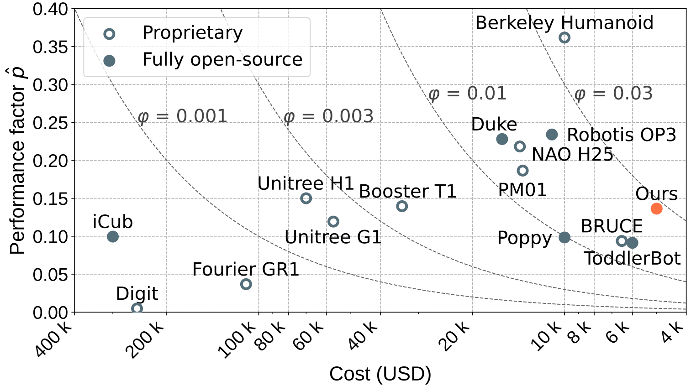

Berkeley Humanoid Lite: An Open-source, Accessible, and Customizable 3D-printed Humanoid Robot
Robotics: Science and Systems (RSS) 2025
Yufeng Chi, Qiayuan Liao, Junfeng Long, Xiaoyu Huang, Sophia Shao, Borivoje Nikolic, Zhongyu Li, Koushil Sreenath
University of California, Berkeley
Abstract
Despite significant interest and advancements in humanoid robotics, most existing commercially available hardware remains high-cost, closed-source, and non-transparent within the robotics community. This lack of accessibility and customization hinders the growth of the field and the broader development of humanoid technologies. To address these challenges and promote democratization in humanoid robotics, we demonstrate Berkeley Humanoid Lite, an open-source humanoid robot designed to be accessible, customizable, and beneficial for the entire community.
The core of this design is a modular 3D-printed gearbox for the actuators and robot body. All components can be sourced from widely available e-commerce platforms and fabricated using standard desktop 3D printers, keeping the total hardware cost under $5,000 (based on U.S. market prices). The design emphasizes modularity and ease of fabrication. To address the inherent limitations of 3D-printed gearboxes, such as reduced strength and durability compared to metal alternatives, we adopted a cycloidal gear design, which provides an optimal form factor in this context. Extensive testing was conducted on the 3D-printed actuators to validate their durability and alleviate concerns about the reliability of plastic components. To demonstrate the capabilities of Berkeley Humanoid Lite, we conducted a series of experiments, including the development of a locomotion controller using reinforcement learning. These experiments successfully showcased zero-shot policy transfer from simulation to hardware, highlighting the platform's suitability for research validation.
By making the hardware design, embedded code, and training and deployment frameworks fully open-source and globally accessible, we aim for Berkeley Humanoid Lite to serve as a pivotal step toward democratizing the development of humanoid robotics.

Demonstrations
Playing with a Rubik's Cube
Writing its name with a marker
Playing with blocks
Locomotion in bipedal configuration
Comparision
To be able to benchmark against other robots and illustrate our focus on accessibility and customizability while maintaining sufficient performance, we introduce a quantitative metric that captures cost-effectiveness. Specifically, we define the performance factor as the average peak torque of all actuated DoFs, normalized by the robot's size:
$N$ denotes the number of actuated DoFs, $h$ and $mg$ represent the height and weight of the robot, and $|\tau_i^{\max}|$ represents the maximum torque of the i-th joint motor. The performance factor per dollar is then defined as the performance factor divided by the cost or selling price of the robot:
As shown in the figure below, our platform achieves high performance factor with a cost lower than $5000.
BibTeX
@inproceedings{chi2025demonstrating,
title={Demonstrating Berkeley Humanoid Lite: An Open-source, Accessible, and Customizable 3D-printed Humanoid Robot},
author={Yufeng Chi and Qiayuan Liao and Junfeng Long and Xiaoyu Huang and Sophia Shao and Borivoje Nikolic and Zhongyu Li and Koushil Sreenath},
year={2025},
eprint={},
archivePrefix={arXiv},
primaryClass={cs.RO},
url={},
}
Community
Discord Community
Scan QR code to join our Discord server:
WeChat Group
Scan QR code to join our WeChat group:
Acknowledgements
We would like to thank Lydia Liu, Widyadewi Soedarmadji, and Daniel Wong for the early-stage project explorations. We would also like to thank Alex Hao and Ted Zhang for providing help on supporting the experiments. We are grateful to Chengyi Lux Zhang for the generous assistance. Finally, we appreciate the helpful discussions from all members of Hybrid Robotics Group and SLICE lab.
This work is supported in part by NSF 2303735 for POSE, in part by NSF 2238346 for CAREER, in part by the Robotics and AI Institute. K. Sreenath has financial interest in the Robotics and AI Institute. He and the company may benefit from the commercialization of the results of this research.